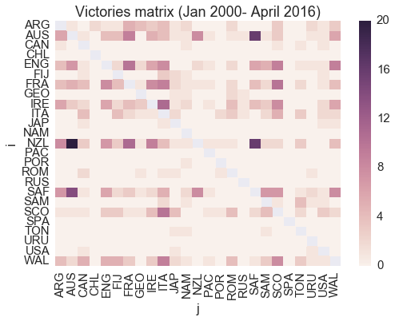

Tue 03 May 2016
For the purpose of this post: rugby = rugby union
When trying to predict rugby outcomes, a reasonable idea seemed to be using teams' position in world rankings as a feature. Ideally, my goal was to have a rank at time \(t\) feature, so that eg. when validating the model by predicting outcomes of the 2011 world cup, I could use 2011 rankings. Easier said than done.
All World Rugby member countries are assigned a rating that is a number in the range of 0 to 100. The rating is calculated using a points exchange system, where a team can move up or down in ranking based on its performance. Since scraping historical data is not an option, why not implement the points exchange algorithm?
www.worldrugby.org gives an explanation of how the ranking is generated. This comes with a degree of magic that is are the "rating gap" coefficient, and a frw other seemingly arbitrary multiplicative factors.
This system does not strike me as particularly intuitive and attempts to implement the algorithm lead to results inconsistent with the expected ones. Nor have I been able to find and off the shelf satisfactory implementation.
After a couple of evenings spent debugging and tuning coefficients, it seemed appropriate to look at this as a learning from data problem.
In a machine learning framework, we want to estimate some latent strength \(\alpha_i\) and \(\alpha_j\) of team \(i\) and \(j\) teams, based on a dataset of past outcomes in \(n\) matches; by doing a pairwise comparison for all teams, we can determine how strong they are relatively to each other.
The Bradley–Terry-Luce (BTL) is a well-known family of probability models for pairwise comparisons, that date back to the 1920s. The canonical formulation states that given a pair of items \(i\) and \(j\), we can estimate the probability that the pairwise comparison \(i > j\) (read this as "i outperforms j") as
\(P(i > j) = \frac{\alpha_{i}}{\alpha_i + \alpha_j}\)
By exponentiating both the numerator and denominator and applying the logit function to \(P(i > j)\), we can conveniently reparametrize the model as
\(\sigma(\alpha_i - \alpha_j)\)
where \(\sigma(x) = \frac{1}{1 + e^{-x}}\).
Note that we essentially reformulated the BTL model as a logistic regression. For more details see eg. Barber, 2012.
In sports terms, we are saying that a team's (latent) strength can be characterized by a real-valued \(\alpha\), and the probability of team \(i\) defeating team \(j\) is proportional to their difference in strength.
\(\alpha_i\) and \(\alpha_j\) can be learned via maximum likelihood estimation.
Given a matrix \(X\) of game data, the likelihood function of the model is given by:
\( p(X|\alpha) = \prod_{ij} [\sigma(\alpha_i - \alpha_j)^{M_{ij}} ]\)
where \(M_{ij}\) is the number of times team \(i\) defeated team \(j\).
In Python, we can use scipy.optimize to minimize the negative loglikelihood:
def loglikelihood(m, X):
ll = 0.0
nrows, ncols = X.shape
for idx in range(0, nrows):
i, j, n = int(X[idx, 0]), int(X[idx, 1]), int(X[idx, 2])
ll += n * np.log(sigmoid(m.r[i] - m.r[j]))
return -ll
where m is an instance of
class BradleyTerry(object):
def __init__(self, r):
# ranking
self.r = r
and X is a matrix of game outcomes. Each row is a triple \(i, j, n\), where \(n\) is the number of times team \(i\) has defeated team \(j\). Note that we are allowing entries for both \(i\) vs \(j\) and \(j\) vs. \(i\).
Finally, we minimize loglikelihood(m, X) with
from scipy.optimize import minimize
r = np.zeros(n_teams)
def f(r):
return loglikelihood(BradleyTerry(r), X)
res = minimize(f, np.zeros(n_teams))
A dataset of 1102 matches, from January 2000 to April 2016, has been obtained from http://www.lassen.co.nz/pickandgo.php; draws (21) have been filtered out. Figure 1 shows the pairwise results; the darker a cell, the more times team \(i\) defeated team \(j\) in the past 16 years.
Figure 1. number of victories team i has over team j
The model estimated the following ranking:
| rank | team |
|---|---|
| 0 | NZL |
| 1 | AUS |
| 2 | SAF |
| 3 | ENG |
| 4 | FRA |
| 5 | IRE |
| 6 | WAL |
| 7 | ARG |
| 8 | SCO |
| 9 | ITA |
| 10 | SAM |
| 11 | FIJ |
| 12 | GEO |
| 13 | ROM |
| 14 | CAN |
| 15 | JAP |
| 16 | TON |
| 17 | USA |
| 18 | SPA |
| 19 | CHL |
| 20 | POR |
| 21 | PAC |
| 22 | RUS |
| 23 | URU |
| 24 | NAM |
| Table 1. BTL ranking |
This looks good. New Zeland trumps everyone, with South Africa and Australia breathing on the All Blacks' neck. Following are the 6 Nations team and Argentina. Tier 2 nations trailing.
How does the model compare to the official World Rugby rankings?
For \(n\) teams let
\(RMSE = \sqrt{ \frac{ \sum_{i=1}^n (y_i - \hat{y}_i )^2 }{n} }\)
be our evaluation metric of choice. \(y_i\) is the position of team \(i\) in World Rugby rankings, while \(\hat{y}_i\) is the position predicted by BTL.
The RMSE of BTL for the estimated top 20 teams is ~2.50. Not perfect, but, as it turns out it, good enough to feed a predictive model.
If we restrict to the top 10, the RSME is as low as 2.2. Pretty neat!
| rank | team |
|---|---|
| 0 | NZL |
| 1 | AUS |
| 2 | SAF |
| 3 | ENG |
| 4 | WAL |
| 5 | ARG |
| 6 | IRE |
| 7 | FRA |
| 8 | SCO |
| 9 | JAP |
| 10 | FIJ |
| 11 | GEO |
| 12 | TON |
| 13 | ITA |
| 14 | SAM |
| 15 | ROM |
| 16 | USA |
| 17 | CAN |
| 18 | RUS |
| 19 | URU |
| 20 | NAM |
| 21 | SPA |
| 22 | BEL |
| 23 | GER |
| 24 | HON |
| 25 | KOR |
| 26 | CHI |
| 27 | KEN |
| 28 | UKR |
| 29 | POR |
| Table 2. True rankings (accessed 2016-04-30) |
Arguably, the first three positions are easy to estimate. New Zeland, Australia, South Africa and are dominant teams, continuously contending the highest spots in the chart. A possibly more interesting metric is to look at RMSE for positions 4-10 and 4-20, which is 2.7 and 2.73 respectively.
All in all BTL's performance exceeded my expectations.
However, there are a number of issues with this approach. The most obvious one being that home advantage is an important factor in sport, which should be incorporated. Same goes for ties; they are a relatively rare event in rugby, but it would be nice to model this scenario for reuse in other sports. Another very important issue is that we are giving the same weight to a match that happened yesterday or 16 years ago.
Finally, MLE is likely to overfit when the training sample is small. Bayesian estimation techniques (and/or generalized linear models) are also something I plan to try out.